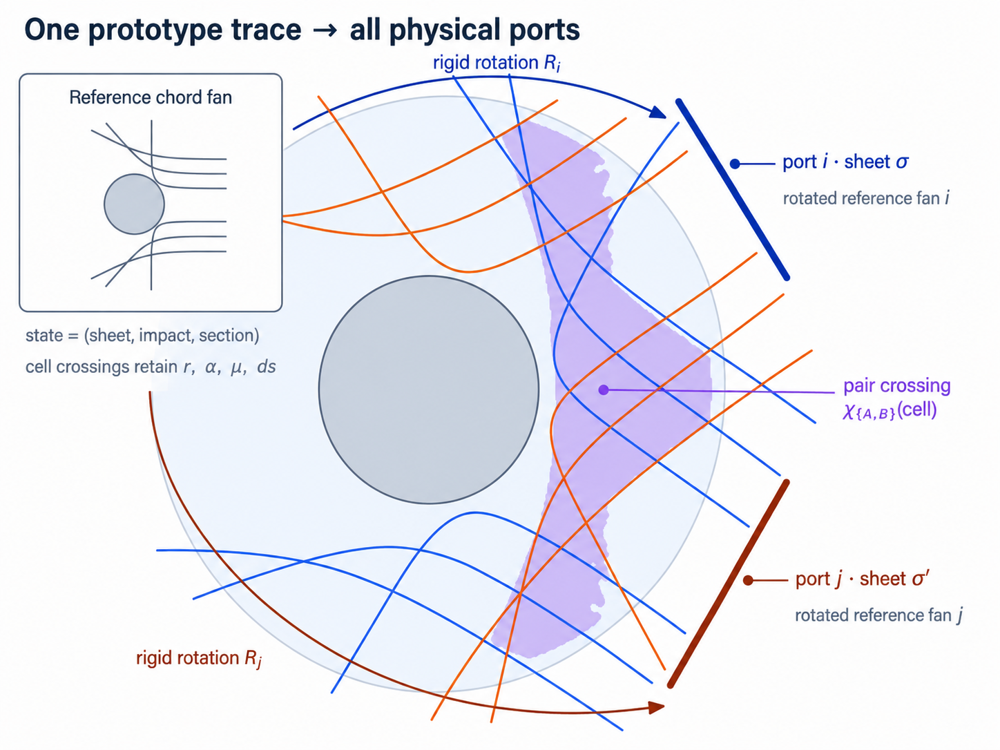
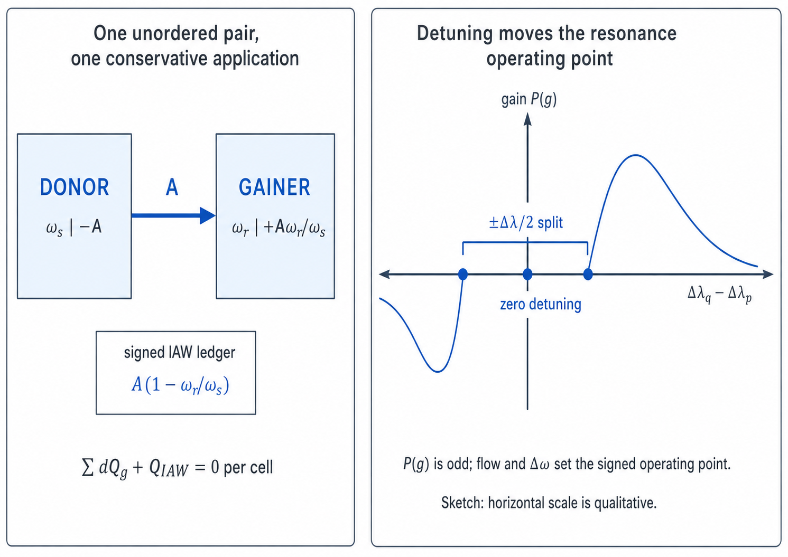

CBET（交差ビームエネルギー転送）reference
TENRYU の交差ビームエネルギー転送（CBET）は、交差するレーザービームが駆動するイオン音波を介して、光のパワーを再配分する。1D 球対称の port_section モードでは、代表となる 1 本のビームの屈折軌道を一度だけ追跡し、その位相空間を実際のポート方向へ剛体回転させる。これにより、球対称の流体計算を保ったまま、実際のポート配置、交差角、偏光平均、波長離調、ポンプ光の減衰をビーム対ごとに表現できる。交換は保存型であり、離調がある場合には光の波作用と符号付きイオン音波（IAW）の台帳まで閉じる。CBET は強減衰極限の誘導ブリルアン散乱である。交差するビームのビートがポンデロモーティブ力でイオン音波を駆動し、ドップラーシフトした共鳴が転送の大きさと向きを決める。
物理機構
同じプラズマ体積で交差する二つの電磁波 \((\omega_p,\mathbf{k}_p)\) と \((\omega_q,\mathbf{k}_q)\) はビートを作る。そのポンデロモーティブ力は差周波数 \(\Delta\omega=\omega_q-\omega_p\) とビート波数ベクトル \(\mathbf{k}_a=\mathbf{k}_q-\mathbf{k}_p\) で振動する。この力がイオン密度の摂動、すなわちイオン音波を駆動する。密度の周期的な変調は屈折率の変調でもあるので、この音波は移動する回折格子として働き、各ビームはそこでブラッグ散乱を受ける。散乱波の向きと位相は相手ビームに重なるため、共鳴的に駆動された格子を介して、一方のビームから他方へエネルギーが可干渉に転送される。これは誘導ブリルアン散乱（SBS）の三波結合であり、散乱の種が雑音ではなく相手のビームである点だけが通常の SBS と異なる。
速度 \(\mathbf{u}\) で流れるプラズマでは、イオンから見たビートはドップラーシフトし、固有応答は \(\Delta\omega-\mathbf{k}_a\cdot\mathbf{u}=\pm|\mathbf{k}_a|c_a\) で生じる。後で定義する規格化した離調量 \(g\) はこの条件を無次元化したものであり、\(|g|=1\) が共鳴である。直接照射では次の二つの帰結が重要になる。ひとつは、同じ波長のビーム同士（\(\Delta\omega=0\)）であっても、射影した流速が音速に達する \(\mathbf{k}_a\cdot\mathbf{u}=\mp|\mathbf{k}_a|c_a\)、すなわち膨張コロナのマッハ 1 面では強く交換すること。もうひとつは、意図的に与えた波長離調 \(\Delta\lambda\) が応答曲線上の動作点を移すことである。後者が CBET を緩和する制御手段になる（図B）。
イオン音波の応答関数 \(P(g)\)（次節で定義）は \(g\) の奇関数なので、\(g\) の符号が転送の向きを決める。\(g_{pq}>0\) ならパワーはポンプ光 \(q\) からプローブ光 \(p\) へ流れる。プラズマとともに動く系で青方偏移したビームが、赤方偏移したビームをポンプする、という関係である。光子の描像で見ると、この交換は波作用（光子数）を保存する。散乱された光子は個数を保ったまま \(\omega_s\) から \(\omega_r\) へ振動数が下がり、単位パワー当たりの Manley–Rowe 不足分 \(1-\omega_r/\omega_s\) がイオン音波へ沈着する。TENRYU はこの不足分を符号付き IAW 台帳へ厳密に記帳する（後述の波作用の節）。
TENRYU が評価するのは、Marozas らの線形・定常・強減衰の局所平面波極限 [1] — LLE の 2D 流体コード DRACO が使う形式 — である。イオン音波は局所的な駆動に従属している、すなわちセル間を伝播せずエネルギーを蓄えないと仮定する。この仮定により、交差ごとに局所的な利得係数を置ける。無次元の減衰率 \(\alpha_{iaw}=\nu_a/(|\mathbf{k}_a|c_a)\)（既定 0.2、LLE の 1D 流体コード LILAC の系譜に対する較正値）が共鳴の幅を決める。v1 で意図的に対象外とした、モデル設計時に記録済みのスコープ決定は、\(|\Delta\omega|/\omega_0\) 次のイオン音波加熱補正、火面（コースティック）補正、スペックル統計、偏光のダイナミクス、広帯域照射、運動論的な \(\nu_a(k)\) である。
イオン音波利得モデル
プローブ光 \(p\) とポンプ光 \(q\) が同じプラズマセルを横切るとき、無次元利得 \(d\tau_{pq}\) を評価する。プローブ強度は \(dI_p=d\tau_{pq}\,I_p\) に従って増幅される。すなわち \(d\tau_{pq}\) は対数利得 \(d\ln I_p\) であり、線形（強減衰・定常）モデルではポンプ強度 \(I_q\) と経路長 \(ds\) に比例する。移行するパワー \(d\tau_{pq}\,I_p\) は両ビームの強度に比例し、この双線形性は後述の対交換式 \(\Delta P_{A\leftarrow B,c}=\chi\,L_{A,c}L_{B,c}/V_c\) の積 \(L_{A,c}L_{B,c}\) に対応する。役割を入れ替えた \(d\tau_{qp}\) は \(I_p\) に比例する。温度は内部で eV から erg へ変換し、式はガウス単位系の cgs で計算する。
$$ d\tau_{pq}=\eta_{pol}\frac{\lambda_0 e^2}{c^3m_e} \frac{\hat n_e}{1-\hat n_e} \frac{\langle Z\rangle}{\langle Z\rangle T_e+3T_i} P(g_{pq})I_q\,ds, \qquad \eta_{pol}=\frac{f_{cbet}}{4}(1+\cos^2\psi). $$ $$ g_{pq}=\frac{(\omega_q-\omega_p)-\mathbf{k}_a\!\cdot\!\mathbf{u}} {|\mathbf{k}_a|c_a},\qquad P(g)=\frac{g\alpha_{iaw}}{(g\alpha_{iaw})^2+(1-g^2)^2}, \qquad \mathbf{k}_a=\mathbf{k}_q-\mathbf{k}_p. $$- \(\eta_{pol}=\tfrac{f_{cbet}}{4}[1+(\hat k_q\cdot\hat k_p)^2]\) — 交差角 \(\psi\)（\(\cos\psi=\hat k_q\cdot\hat k_p\)）で交わる、非偏光かつ平滑化されたビームに対する偏光平均である。
f_cbetが実験較正を吸収する（DRACO では 1.5、TENRYU の既定は 1.0）。 - \(\lambda_0 e^2/(c^3 m_e)\) — 誘導ブリルアン散乱の結合定数である。式に \(\lambda_0\) が現れることは、長波長の光ほど強い CBET を受けるというよく知られた性質を表す。
- \(\hat n_e/(1-\hat n_e)\) — 密度結合 \(\propto\hat n_e\) と、ビーム対が臨界密度へ近づくときの電磁波の誘電的な増強 \(1/(1-\hat n_e)\) の積である。
- \(\langle Z\rangle/(\langle Z\rangle T_e+3T_i)\) — \(\langle Z\rangle T_e+3T_i=\bar m_i c_a^2\) なので、音響的な硬さの逆数にあたる。高温で音速の大きいプラズマほど圧縮しにくく、応答が小さくなる。
- \(P(g)\) — 減衰 \(\alpha_{iaw}\) をもつ強制振動子としてのイオン音波の、吸収成分である。\(|g|\simeq 1\) 付近に極大をもち、\(g\) についての半値全幅は \(\simeq\alpha_{iaw}\)、そして \(g\) の奇関数である。
- \(I_q\,ds\) — 利得はポンプ強度と経路長に対して線形である。ポンプ光の減衰は後述の外側反復を通じてのみ入るため、1 回ごとの評価は線形のままである。
すべてガウス単位系の cgs で評価し、温度は eV から変換した erg を使う。\(n_{crit}=m_e\omega_0^2/(4\pi e^2)\) は 351 nm で \(9.06\times10^{21}\,\mathrm{cm^{-3}}\)、527 nm で \(4.02\times10^{21}\,\mathrm{cm^{-3}}\) となり、電子に関する定数はレーザーモジュールと共有する。\(c_a=[(\langle Z\rangle T_e+3T_i)/\bar m_i]^{1/2}\)、\(\bar m_i=A_{eff}m_p\) であり、1 温度モデルの計算では \(T_i=T_e\) とする。
1D 球対称縮約 — 角度グループと方位角求積
従来の縮約では、追跡した光線を三つの鍵でまとめる。ビーム \(b\)、軌道を折り返し点で分けた区間 —「シート」と呼び、内向きか外向きかを \(\sigma=\mathbb{1}[\mu_{seg}>0]\) で区別する — 、そして衝突径数ビン \(a\) である。集計群の添字は \(g=b\,(2N_{bin})+\sigma N_{bin}+a\) とする — この整理番号としての \(g\) は、上の利得モデルの規格化離調 \(g\) とは無関係である。区間の方向余弦は、屈折軌道に沿う厳密な経路平均 \(\mu_{seg}=(r_{stop}-r_{old})/\Delta s\) である。セル \(c\) での集計量は、パワーの線積分 \(L_{g,c}=\sum P\Delta s\)、強度 \(I_{g,c}=L_{g,c}/V_c\)、パワー重み付き方向余弦 \(\bar\mu_{g,c}=\sum P\Delta s\mu/L_{g,c}\) であり、\(V_c\) はトレースを取った時刻のラグランジュセル体積である。
$$ \cos\psi(\varphi)=\bar\mu_p\bar\mu_q+s_ps_q\cos\varphi,\quad s=\sqrt{1-\bar\mu^2},\qquad |\mathbf{k}_a|(\varphi)=\bar k\sqrt{2(1-\cos\psi)},\quad \bar k=n_r\omega_0/c, $$ $$ \mathbf{k}_a\cdot\mathbf{u}=\bar k\,u_r(\bar\mu_q-\bar\mu_p)\ \ (\varphi\text{-independent}),\qquad \langle P\cdot pol\rangle_\varphi=\frac{1}{N_\varphi}\sum_k\frac{1+\cos^2\psi(\varphi_k)}{4}\,P(g(\varphi_k)). $$ここで \(\varphi\) は二つの光線面のあいだの相対方位角、\(s_p,s_q\) は集計方向余弦 \(\bar\mu_p,\bar\mu_q\) の正弦、\(\bar k=n_r\omega_0/c\) は局所の光波数、\(\langle P\cdot pol\rangle_\varphi\) は対の結合に入る、応答×偏光因子の方位角中点平均である。
1D の流体計算は二つの光線面のあいだの相対方位角 \(\varphi\) を解像しないため、対の運動学は \(\varphi\) についての中点則で平均する。平均するのは \(P(g)\) そのものであり、非線形性を無視した \(P(\langle g\rangle)\) ではない。半径方向の流れは \(\mathbf{k}_a\cdot\mathbf{u}=\bar k u_r(\bar\mu_q-\bar\mu_p)\) を通じて入り、この式は厳密で \(\varphi\) に依存しない。共鳴の半値全幅は \(\simeq\alpha_{iaw}\) なので、中点則は \(\max_k|g(\varphi_{k+1})-g(\varphi_k)|\lesssim\alpha_{iaw}/4\) を満たすかぎり共鳴を解像できる。alpha_iaw を大幅に小さくする設定では、より大きな n_phi が必要である。
ne_frac_cutoff 以上（既定 0.95）の密度をもつセル、ボイドセル、状態量 \(\rho,\bar Z,A_{eff},T_e,T_i,u_r,V_c\) のいずれかが有限でないセルは除外し、\(u_r\) にはセル平均した節点速度を使う。\(|\mathbf{k}_a|/\bar k<\)k_a_floor となる節点はビート波を持たないため、寄与は 0 である。利得の前置因子と \(\bar k\) は、逆制動輻射吸収と同じ absorption.eps_n で \(1-\hat n\) に下限を課す。設定検証が ne_frac_cutoff \(\le 1-\)eps_n を強制するため、有効な密度帯の内側でこの下限が利得を気付かぬうちに飽和させることはない。port_section モードは、この解像されない方位角平均を、実際のポート配置に基づくセクタ・区画への写像で置き換える。
単一トレースからの port-section 再構成
参照トレースは、セルを横切るごとに半径、方向余弦 \(\mu\)、路程 \(ds\)、入射・出射のシート、衝突径数ビンを保持する。軌道に沿う極角は \(\sqrt{1-\mu^2}/r\) をシンプソン則で累積して復元し、隣り合う光線の角度差から有限の光線束断面積を作る。折り返し点でシートを切り替え、折り返し点と火面のあいだの制限領域は場の評価から除外する。ポンプ光を参照する位置を相手ポートの座標系へ逆回転した結果が、参照扇の最大極角を越える影の領域に入る場合は、その交差を分子と分母の双方から除く。

展開後の状態は \(A=(i,\sigma,\beta,m)\)、すなわちポート、シート、衝突径数ビン、区画の組である。単一の参照記録を各ポートのパワー重みで複製し、正準なポート ID 順で集計し、伝播する。各セルにおける順序なしの対 \(\{A,B\}\) は一度だけ評価し、同じ量を符号を反転して両方の状態へ適用する。ここに \(N(N-1)/2\) のような規格化は入らない。ひとつの物理ビームを同方向・同波長の二つへ分割しても、重みと強度の和が等しければ結果が変わらない——このビーム分割不変性が上の規約を固定する。同一ポートの異なるシート同士の組合せも正当な対である。
計算上の詳細を挙げる。参照弦に沿う極角は、記録区間ごとに \(\sqrt{1-\mu^2}/r\) をシンプソン則で累積して復元し、隣り合う光線が張る有限の束断面積には Follett らの扇形面積の離散形（文献 [2] の式 (10)）を使う。ポンプ光の参照は、各交差点をポンプ側ポートの座標系へ逆回転し（同じく文献 [2] の式 (21) の回転）、その (シェル, 区間, \(\theta'\)) の表を線形補間して求める。参照扇の最大極角を越える影の交差は分子と分母の双方から除外する一方、下限を下回る \(|\mathbf{k}_a|\) については分母を残すため、対を再規格化せずに希釈する扱いになる。v1 は展開後の対の総数を 65536 以下に制限する。GXII 規模のポート構成は現時点で実行でき、OMEGA/NIF 規模は文書化済みの拡張項目である。
1 回の CBET 求解の計算過程
記録する。 CBET を有効にすると光線追跡カーネルは記録モードで動き、光線ごとに、セルを横切るたびに \(\{c,\mu,\Delta s,S,w\}\) という項目をひとつ保存する。\(S\) はその交差のなかで台形則により合計した、逆制動輻射吸収の光学的厚さ、\(w\) はこの IB のみのトレースにおける交差時点の光線パワーで、ステップ 5 の最初の反復の集計の種になる。臨界層での終端処理は \(\Delta s=0,\ S=\tau_{tail}\) をもつ末尾の記録として保存する。容量の超過は即時エラーとする。経路を黙って打ち切ると、途中までは集計に寄与しながら、逆制動輻射で吸収されるはずの分が気付かれないまま「未吸収」へ移ってしまうためである。
集計する。 群とセルごとの \(L,\bar\mu,\Delta s^{max}\) を、整列した区間上での固定順序の逐次和として累積する。この求解のどこにも浮動小数点の atomic 演算はなく、同じビルドと同じデバイスであれば、実行のたびにビット単位で同じ結果が得られる。
-
結合係数を作る。 結合係数の表は、セルと順序なし対ごとに一度ずつ評価する。
$$ \chi^{ps}_{c,\{A,B\}}=\chi_{pref}(c) \frac{\sum_x\sum_m \hat w_A(x)\hat I_B(x,m)\eta_{pol}P(g)} {\sum_x\sum_m \hat w_A(x)\hat I_B(x,m)},\qquad \Delta P_{A\leftarrow B,c}=\chi^{ps}_{c,\{A,B\}}\frac{L_{A,c}L_{B,c}}{V_c}. $$port_sectionでは反復に入る前の一度だけである：幾何が位相空間の表から得られ、反復中の \(L\) に依存しないため、\(\chi^{ps}\) は反復を通じて不変である。一方、従来の縮約ではパワー重み付き方向 \(\bar\mu\) が \(L\) とともに動くため、ステップ 5 の反復ごとに \(\chi\) を評価し直す。区画は \([0,2\pi)\) を等分した中点にとり、起点の位置をポンプ側ポートの座標系へ逆回転して表を線形補間する。GPU の高速経路は各 \((cell,pair)\) を 1 スレッドで処理し、浮動小数点の atomic 演算を使わない。GPU 側の作業領域は、ポート座標系、周波数、対の表、デバイスからの読み戻し用の容量を保持したまま求解のあいだ再利用され、ホスト側の参照実装は許容誤差の検証用に残してある。反対称性が成り立つ機構は次のとおりである。\(g_{qp}=-g_{pq}\) は浮動小数点演算でも厳密に成立し、\(P(g)\) は浮動小数点上でも奇関数である。さらに実装は \(\chi\) を対ごとに一度だけ評価し、適用する積を両側で同じ正準的な (min,max) の被演算子順序で丸める。このため対どうしの交換は、丸め誤差の範囲で近いというだけでなく、構成上ビット単位で反対称である。
上限を掛ける。 上限処理は、群ごとの総損失 \(\ell_{g,c}\) に対する 2 段階の流束制限である。結合が強いときに供給側が負にならないよう、各群の総損失から \(f_g=\min[1,\theta L_g/(\Delta s_g^{max}\ell_g)]\) を作り（\(\theta\) は
theta_cap、\(\Delta s_g^{max}\) はそのセル内でその群が 1 回の交差で通る最長の路程 — 上限がセル総量ではなく交差ごとに掛かる理由である）、対には \(\min(f_A,f_B)\) を掛ける。同じ係数を両方向へ掛けるため反対称性は壊れず、1 回の交差あたりの相対損失をtheta_cap以下に抑える。-
伝播させ、反復する。 この求解が自己無撞着にしなければならない量 — そして収束判定の対象 — は、ビームどうしが互いに見せる強度場である。離散的には、ステップ 2 のセル・集計群ごとのパワー線積分 \(L_{g,c}\) がそれに当たる。各対の交換には両者の局所パワーが要るが、そのパワー自身が、逆制動輻射吸収と、各光線の上流で起きたすべての CBET 交換をすでに含んでいなければならない。TENRYU はこの循環依存を、\(L\) に対する緩和なしの不動点（ピカール）反復で閉じる。反復 \(m\) は次を順に行う。
- 集計。 反復 \(m-1\) の光線パワーから \(L^{(m)}_{g,c}\) を作る。最初の反復は記録トレース、すなわち CBET を入れる前の逆制動輻射吸収だけの場を集計する。
- 交換の評価。 その集計から各対の \(\Delta P_{A\leftarrow B,c}=\chi\,L^{(m)}_AL^{(m)}_B/V_c\) を評価する — ポンプ光の減耗はここで効く。前の反復で弱められた相手は、小さくなった \(L\) しか差し出さないからである。ステップ 4 のドナー上限を掛け直し、対の交換をセルごとの純台帳 \(dQ_{g,c}=\sum_q\Delta P^{final}\) へまとめる。
port_sectionでは幾何因子 \(\chi^{ps}\) が反復不変だが、従来経路ではパワー重み付き方向 \(\bar\mu\) が \(L\) とともに動くため、ここで \(\chi\) を評価し直す。 - 収束判定。 集計そのものの相対 L1 変化 \(\sum_{g,c}|L^{(m)}_{g,c}-L^{(m-1)}_{g,c}|\,\big/\sum_{g,c}L^{(m-1)}_{g,c}\) が
tol未満（既定 1e-3、max_iters50）なら収束である。 - 再伝播。 未収束なら、すべての光線を発射時のパワー \(P_0\) から — 前の反復の終端からではなく — もう一度伝播させ、各交差で「逆制動輻射吸収の半分 → そのセルの純交換の自分の取り分 → 吸収の残り半分」を適用する。
交差が受け取る \(dQ_{g,c}\) の取り分は、前世代の集計に占めるその交差の割合 \(w^{(m-1)}\Delta s/L^{(m-1)}_{g,c}\) である。この割合は構成上ちょうど 1 に足し上がる（\(\sum_j w_j\Delta s_j=L\)）ため、光線に沿って適用したパワーは台帳 \(dQ\) へ厳密に集約される。緩和係数や調整のつまみはない。各反復は、最新の交換場のもとで完全に一貫した伝播が生む強度場で、前の場を置き換えるだけである — 純粋なピカール代入で、1 回の反復が動ける幅はステップ 4 の上限が抑える。CBET を適用したあとのパワーが、次の反復の集計重み（世代 \(m\)）になる。最終の掃引では、世代をそろえた \(dQ\) と \(w\) で沈着を行う。世代がずれると保存が黙って破れるため、解析解のあるスラブ問題で検査している。
正値性と台帳。 反復の途中で生じる負のパワーの頭打ちは正値射影として扱い、発生回数だけを数える。物理的な判定基準は、最終掃引で注入される頭打ち分のパワーが 0 であることである。続いて台帳 \(P_{in}=P_{dep}+P_{unabs}+\Sigma_{applied}\) を監査する。\(\Sigma_{applied}\) は適用した対交換の総和で、交換は対ごとに厳密に反対称なので理想的には 0 — 実際には浮動小数点の丸めが累積する \(O(N\varepsilon)\) の水準で閉じる（相対値の実測は \(\lesssim10^{-12}\)）。CBET が物質を直接加熱することはなく、エネルギーを沈着するのは逆制動輻射吸収だけである。交換されるパワーは、どの光線がパワーを運ぶかを付け替えるにすぎない。沈着量と未吸収パワーは、通常どおりビームごとの固定順序の総和へ流れる。
収束後の最終掃引は、セルへの沈着量と未吸収パワーを既存の台帳へ加え、交換後のパワーを元の光線軌道へ書き戻す。そのため可視化でも、どの区間で増減したかを追跡できる。トレースを省略したときに行うビームごとのパワー再スケールは、線形な逆制動輻射吸収には厳密だが、非線形な CBET には厳密ではない。このため CBET を有効にした場合は、いずれかの群のパワーが 1% を超えて変化した時点でも再トレースを起動する。
波長離調と波作用の台帳
各ポートは \(\Delta\lambda_b\) をもち、\(\omega_b=2\pi c/(\lambda_0+\Delta\lambda_b)\) として共鳴条件の \(\Delta\omega\) に入る。v1 では軌道、\(|\mathbf{k}|\)、\(n_{crit}\) を共通の \(\lambda_0\) で凍結し、離調は共鳴条件にのみ作用させる。凍結される量のずれは相対で \(\Delta\lambda/\lambda_0\) のオーダーに留まり（\(n_{crit}\propto\lambda^{-2}\) の移動は 351 nm・0.1 nm の分割で \(2\Delta\lambda/\lambda_0\approx6\times10^{-4}\)）、サブナノメートルの GXII/OMEGA 級の離調はこの近似の内側に収まる。数 Å の NIF 級分割が後述の記録済みの注意点である。Studio の detune_split_nm は、正準なポート ID 順に \(+\Delta\lambda/2\) と \(-\Delta\lambda/2\) を交互に割り当て、二色に分けた構成を簡潔に作る。

周波数が異なる場合、パワーを等量やり取りすると光子を生成してしまう。三波過程で保存されるのは波作用、すなわち光子数（Manley–Rowe 関係）である。送り手が \(\omega_s\) でパワー \(A\) を失うと、受け手は \(\omega_r\) で \(A(\omega_r/\omega_s)\) を受け取り、その差 \(A(1-\omega_r/\omega_s)\) がイオン音波へ供給されるパワーになる。TENRYU はこれを交換ごとに一度、符号付き台帳 E_cbet_iaw へ記帳する。各セルでは \(\sum_g dQ_{c,g}+Q_c^{IAW}=0\) を検査する。離調が 0 のときは、有限の周波数どうしの比 \(\omega/\omega\) が厳密に 1 になるため、受け手の利得は離調なしの経路とビット単位で一致し、IAW 項はちょうど 0.0 になる。
主要な設定
以下は、Studio が生成する port_section 入力デッキの主要キーである。Studio が従来形式の CBET デッキを生成することはない。表の値は、低レベルのパーサがもつ一般的な既定値ではなく、Studio が書き出す既定値である。
| キー | 既定値 | 用途 |
|---|---|---|
Laser.cbet.enable | False | CBET 全体の有効化スイッチ（キー名は enabled ではなく enable である）。Studio で有効にすると geometry_mode="port_section" を出力する。 |
f_cbet | 1.0 | 偏光平均と実験較正をまとめた係数。 |
alpha_iaw | 0.2 | 無次元のイオン音波減衰率。小さくすると共鳴が鋭くなり、区画の解像度をより多く必要とする。 |
theta_cap | 0.3 | 1 回の交差で供給側が失えるパワーの相対上限。 |
tol | 1e-3 | ピカール反復の相対 L1 収束条件。 |
max_iters | 50 | ピカール反復の最大回数。 |
n_impact_bins | 4 | シートごとの衝突径数ビン数。 |
n_section_phi | 8 | \([0,2\pi)\) を分割する方位角区画の中点数。 |
port preset | gxii | gxii、omega、nif をそれぞれ 12、60、192 ポートへ展開する。 |
detune_split_nm | 0.0 | 正準なポート順に \(+\Delta\lambda/2,-\Delta\lambda/2\) を交互に設定する。 |
ne_frac_cutoff | 0.95 | \(n_e/n_{crit}\) がこの値以上のセルを CBET から除外する。 |
k_a_floor | 1e-6 | \(|\mathbf{k}_a|/\bar k\) がこの値を下回る場合、ビート波の寄与を 0 とする。 |
現行の port_section は、1D 球対称・単一の参照トレース・単一 MPI ランクを前提とする。展開後の対の総数には上限があるため、ポート数を増やす場合は、衝突径数と区画の解像度との積が上限に収まるかを設定検証で確認すること。NIF 級（数 Å）の離調では、軌道を共通波長で近似したことの影響が \(\Delta\lambda/\lambda_0\) とともに大きくなるため（定量化は上の離調の節）、色ごとに明示的にトレースした結果との比較検査の対象になる。
検証
- 解析解による 2 ビーム検査：同方向に伝播するスラブ問題は、双線形の結合 \(dI_2/ds=\gamma I_1I_2\)（\(I_1+I_2=I_{tot}\) 一定）に従い、閉じた形のロジスティック解 \(I_2(s)=I_{tot}/(1+Ce^{-\gamma I_{tot}s})\) をもつ（\(\gamma\) は一様スラブの一定利得係数、\(C\) は入口の強度で決まる積分定数）。
test_cbet_slabは離散解をこの解に対する相対誤差 \(<10^{-3}\)（実測は \(\sim7\times10^{-5}\)）に保ち、\(ds\) に対する 1 次収束、対ごとの台帳が \(\le10^{-13}\) で閉じること、上限処理を強く効かせた状態での頭打ちの整合を検査する。test_cbet_sphereは模擬コロナ上で \(|P_{in}-P_{dep}-P_{unabs}|/P_{in}\le10^{-4}\)（実測は \(\sim10^{-12}\)）を満たす。 - ビーム分割不変性：重み 1 のポート 1 本と、同方向・同波長で重み 0.5 のポート 2 本が同じ結果を与えることを検査し、\(N(N-1)/2\) による規格化が入り込むことを禁じる。
- 明示 N ビーム参照との比較：2、12、60 本のビームについて従来の対ごとの参照実装と比較し、\(E_{abs}\) が 1% 以内、\(Q_{abs}(r)\) の L2 誤差が 2% 以内、ポートごとの出射パワーが 3% 以内であることを要求する。
- 区画数に対する収束：
n_section_phiを 8、16、32 と増やしたとき、全光線を追跡した参照解へ単調に収束することを確認する。 - 離調 0 での中立性：周波数が等しく有限であるとき、受け手のパワーがビット単位で不変であり、
E_cbet_iawが厳密に 0 になることを固定する。 - 波作用の閉包：各セルでの \(\sum_g dQ_{c,g}+Q_c^{IAW}=0\) と、全体としての入射・沈着・未吸収・IAW の各台帳が閉じることを検査する。
参考文献
- J. A. Marozas et al., "Wavelength-Detuning Cross-Beam Energy Transfer Mitigation Scheme for Direct Drive: Modeling and Evidence from National Ignition Facility Implosions," Phys. Plasmas 25, 056314 (2018). doi:10.1063/1.5022181
- R. K. Follett et al., "Modeling Cross-Beam Energy Transfer with Sector Ray Tracing," Phys. Plasmas 32, 022709 (2025). doi:10.1063/5.0253858
- W. L. Kruer, S. C. Wilks, B. B. Afeyan, and R. K. Kirkwood, "Energy transfer between crossing laser beams," Phys. Plasmas 3, 382–385 (1996). doi:10.1063/1.871863
- P. Michel et al., "Energy transfer between laser beams crossing in ignition hohlraums," Phys. Plasmas 16, 042702 (2009). doi:10.1063/1.3103788
- I. V. Igumenshchev et al., "Crossed-beam energy transfer in implosion experiments on OMEGA," Phys. Plasmas 17, 122708 (2010). doi:10.1063/1.3532817